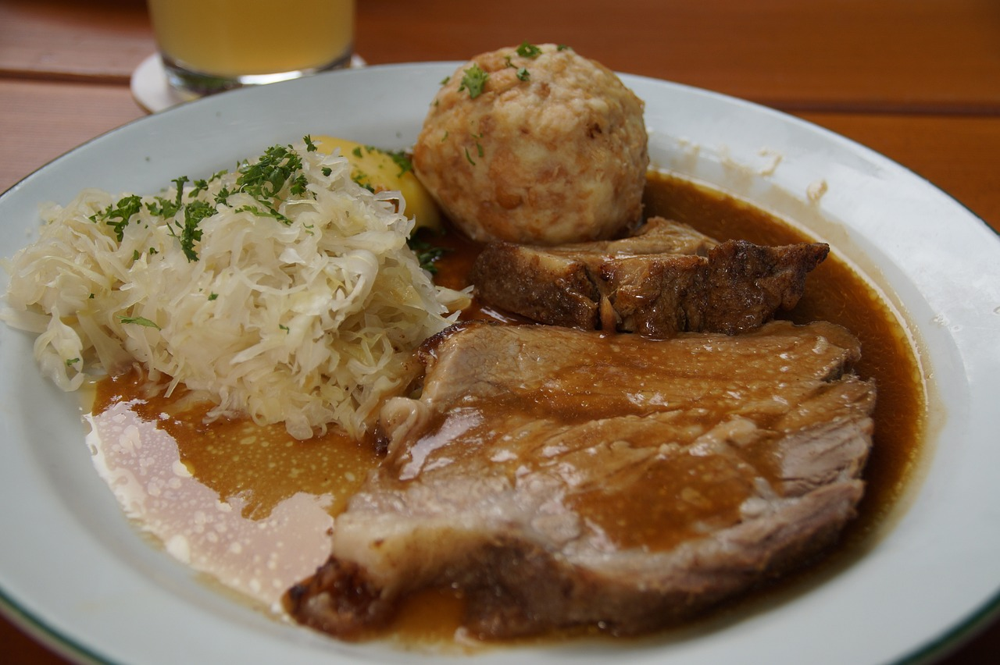

Home
Makange recipe

Roasted pork makange with lemons
Makange,also known as roast pork wiht lemons, is a delightful Tanzaniian dish tha tantalizes the taste buds. The
pork is marinated in a mixture of lemon juice, garlic, and spices, then roasted to perfection. The result is a
tender, flavorful dish that is sure to impress.
garlic and spices, then roasted to perfection. The result is a tender, flavorful dish that is sure to impress.
Ingredients
- Pork
- Lemons
- Garlic
- Spices
- Paprika
Steps
- Marinate in a bowl , combine fresh lemon juice, minced garlic, ground cumin paprika and salt
- Place the pork in a large resealable plastic bag and pour the marinade over the top. Seal the bag and shake
to coat the pork in the marinade. Refrigerate for at least 2 hours, or overnight for best results.
- Preheat the oven to 375 degrees F (190 degrees C). Remove the pork from the marinade and place it in a
roasting pan.
- prepare
- Roast the pork in preheated oven for like 2hours
- Rest.Remove the pork from the oven and let it rest for about 10mnts to retain itsjuices
- Slice and serve. Slice the pork to the desired sizes can be had with kachumbari